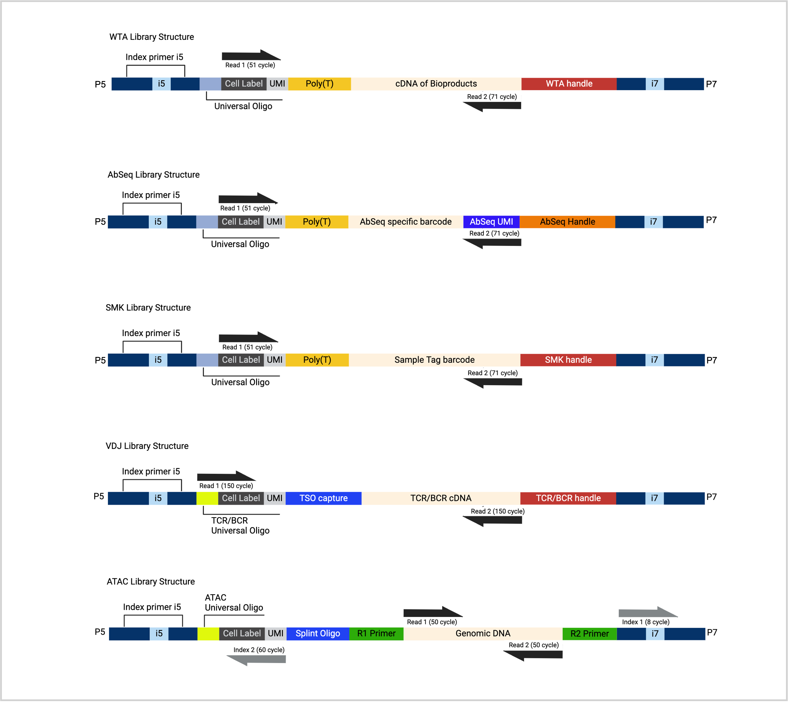

Quick Instruction
Listed below are the important steps to use this sequencing Calculator.
-
Enter your Project Name and UserName
This allows you to keep track of the saved PDF for future reference. -
Enter the final Library concentration in nM:
Without this information, you can't proceed. The Library pooling calculation is dependent on the concentration needed to pool the library. If unsure, please speak to our FAS or your sequencing facility/provider. -
Enter the Final Pooled Volume:
This is usually the amount of pooled library requested by the sequencing facility. Please contact our FAS or your sequencing facility/provider if you are unsure. - Hover and click on the Number of libraries you intend to pool together and click Submit
-
New sections will appear:
- Select the assay from the dropdown menu
- Fill in the input section
- Continue to fill in the input until all the libraries are included
- Once done, click Submit All Values
- The calculation for library dilution and pooling volume for each library would output a table for each assay.
- The sequencing recommendation will appear below the tables.
- The table can be saved in PDF format:
Please enter the filename and click Save as PDF.
BD Rhapsody Library Information
This section will show table for sequencing recommendation with Rhaspsody library, as well as the read structure and reads requirements. Please note this might be different when you are using Beads Version1. Please consult your local FAS for recommendation for Bead Version 1.
| Library | Read 1 (bp) | Read 2 (bp) |
|---|---|---|
| WTA | 51 cycle | 71 cycle |
| WTA + AbSeq | 51 cycle | 71 cycle |
| WTA + SMK | 51 cycle | 71 cycle |
| WTA + AbSeq + SMK | 51 cycle | 71 cycle |
| Targeted | 51 cycle | 71 cycle |
| Targeted + AbSeq | 51 cycle | 71 cycle |
| Targeted + SMK | 51 cycle | 71 cycle |
| Targeted + AbSeq + SMK | 51 cycle | 71 cycle |
| Library | Minimum read length | Recommended read length | Optimal read length | |||
|---|---|---|---|---|---|---|
| Read 1 (bp) | Read 2 (bp) | Read 1 (bp) | Read 2 (bp) | Read 1 (bp) | Read 2 (bp) | |
| VDJ Next | 65 cycle | 150 cycle | 150 cycle | 150 cycle | 85 cycle | 215 cycle |
| VDJ Next + mRNA + SMK | 65 cycle | 150 cycle | 150 cycle | 150 cycle | 85 cycle | 215 cycle |
| VDJ Next + mRNA + AbSeq | 65 cycle | 150 cycle | 150 cycle | 150 cycle | 85 cycle | 215 cycle |
| VDJ Next + mRNA + AbSeq + SMK | 65 cycle | 150 cycle | 150 cycle | 150 cycle | 85 cycle | 215 cycle |
| Library | Read 1 (bp) | Read 2 (bp) |
|---|---|---|
| VDJ CDR3 | 75 cycle | 225 cycle |
| VDJ CDR3 + Targeted | 75 cycle | 225 cycle |
| VDJ CDR3 + Targeted + SMK | 75 cycle | 225 cycle |
| VDJ CDR3 + AbSeq | 75 cycle | 225 cycle |
| Library | Read 1 (bp) | Read 2 (bp) | Index 1 (bp) | Index 2 (bp) |
|---|---|---|---|---|
| ATAC only | 50 cycle | 50 cycle | 8 cycle | 60 cycle |
| ATAC library need to be sequence independently. User may pool multiple ATAC libraries together, but not with other types of library. | ||||
User Information
Required: This project name will be printed on your PDF output file.
Required: Name of the person will be printed on PDF output file.
Per Pooled Library Information
Please consult your sequencing provider for the details below.
Required: General: NovoGene (xx nM)?; Macrogen ( xx nM)? etc.
Required: In general: 50 - 100 (µL)
If applicable: Please discuss and confirm with the sequencing provider